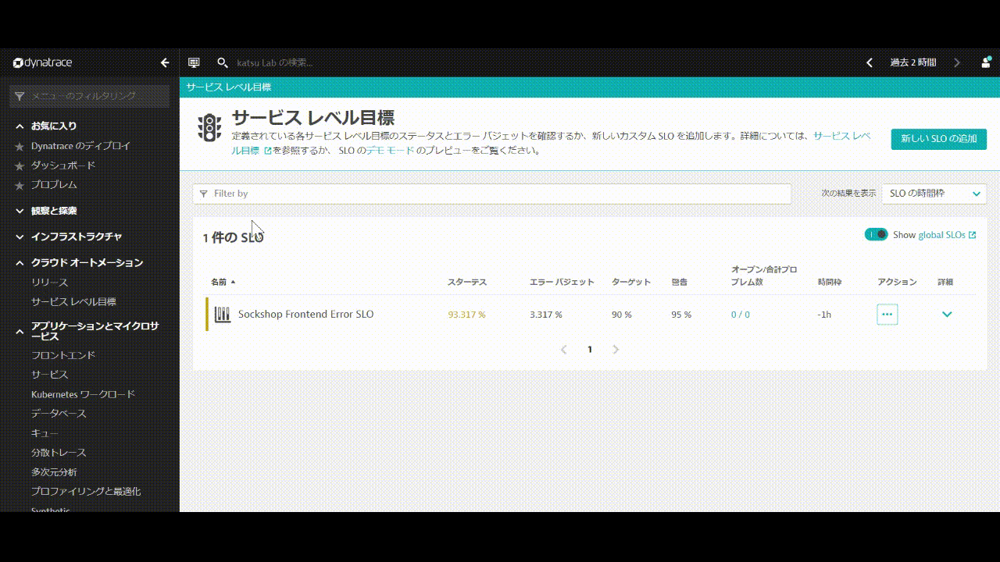
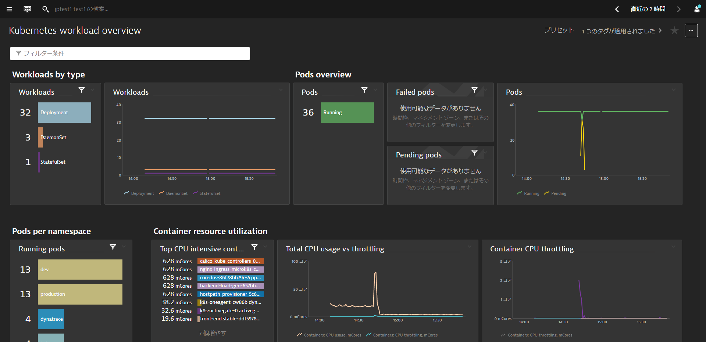
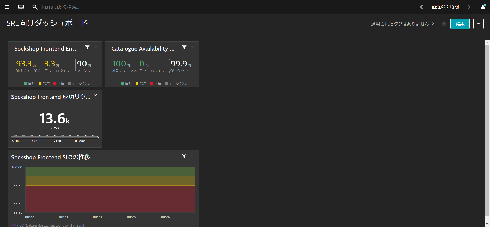
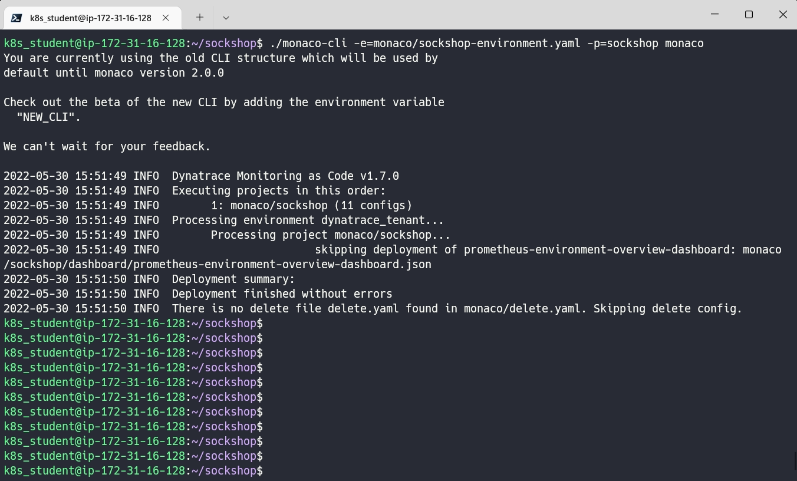
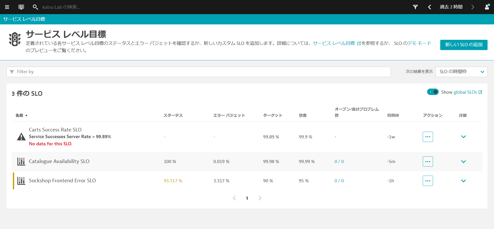

このリポジトリには、Cloud Native Observabilityで実施する内容が含まれています。
Dynatrace主催のハンズオンワークショップへ参加されている方には環境が自動で払い出されます。
事前準備
- DynatraceのAccount：フリートライアルの申し込み
- Kubernetes環境
- Chrome ブラウザ
- SSH クライアント Tera Term
学習内容
- Dynatrace Operatorの導入
- リリース管理
- サービスレベル目標の設定
- Monitoring as Codeによる監視のコード化
この演習では、Kubernetes(Microk8s)を実行しているLinuxインスタンスにDynatrace Operatorをデプロイします。
Linuxターミナルへアクセス
Linuxインスタンスのターミナルにアクセスします。
Dynatrace Operatorのインストール
ブラウザを開き、DynatraceのGUIにアクセスしてください。
以下の手順で進めてください。
- ナビゲーションメニューから 管理 > Dynatraceハブ を開きます。
- Kubernetes を選択します。
- 右下の Kubernetesのモニター ボタンをクリックします。

Kubernetes / Openshiftのモニターページ内で、以下の手順を行います。
- 名前 を入力します 例：
k8s - Dynatrace Operator トークンおよびデータ取り込みトークンのトークンの作成をクリックして、適切なパーミッションのPaaSおよびAPIトークンを作成します。
- SSL証明書チェックのスキップを有効にします。
- ダウンロード: dynakube.yaml ボタンをクリックしてdynakube.yamlファイルをダウンロードします。

- メモ帳などでdynakube.yamlファイルを開き、dynakube.yamlファイルを全て選択し、コピーします。

- ターミナルで
vim dynakube.yamlなどを実行し、dynakube.yamlファイルを貼り付けます。

- Dynatrace UIに戻り、コピーボタンをクリックして、ターミナルに貼り付け実行します。

出力例

インストールの確認
ディプロイメントステータスの表示をクリックすると、接続されているホストの状態を確認することができます。
下の画像のように、接続されたホストが表示されているはずです。

⚠️ トラブルシューティングの手順
Sockshopアプリケーションの再起動
様々なプロセスが自動的に検出されているのがわかりますが、Dynatraceはそれらを再起動するよう促します。これは、コードを変更せずに自動的に監視を行うために必要です。
以下のコマンドを実行して、devとproductionの2つのNamespacesに含まれるPodsを作り直します。
kubectl delete pods --all -n dev
kubectl delete pods --all -n production
Dynatraceにはリリース監視機能が組み込まれており、導入したアプリケーションのバージョンやステージ（名前空間）、プロダクトを判断することが可能です。
リリースの確認
メニューからクラウドオートメーション > リリースを開きます。

これは、リリースインベントリ、リリースイベント、追跡された問題点、の概要を示しています。
各コンポーネントの詳細を見ると、それぞれのコンポーネントの追加メタデータが表示されます。 これにより、監視対象のコンポーネントのコンテキスト情報や、コンポーネントのライフサイクルおよび問題の追跡に関する情報を確認できます。
下の画像はcatalogue catalogue-*を開いた例です。

リリースバージョン、ステージ、製品はKubernetesの以下と一致します。
- リリースバージョン：
app.kubernetes.io/version - ステージ：
Namespace* - 製品：
app.kubernetes.io/part-of

基本的なサービスレベル目標(SLO)を設定していきます。Dynatraceが標準で監視しているメトリクスを用いることで簡単に、サービスレベル指標（SLI）を定義し、その閾値としてSLOを設定することができます。
基礎SLOの作成
以下の手順で進めてください。
- メニューからクラウドオートメーション > サービス レベル目標を開きます。
- 画面右上の新しいSLOの追加ボタンをクリックします。

ここでは、Sockshopアプリケーションのproduction名前空間のfrontendに対する可用性に関するSLOを作成します。以下のように使用します。
- サービスレベル可用性ボタンをクリックします。
- 下にスクロールされるので一旦上に戻り、このSLOに名前を付けます：
Sockshop Frontend Error SLO - メトリック名やメトリック式はデフォルトのままにしておきます。
- フィルターの定義では時間枠のフィルターは
-1h（過去1時間）を指定します。 - エンティティ セレクターは
type("SERVICE"),tag("[Kubernetes]tier:frontend"),tag("[Kubernetes]stage:prod")を入力し、プレビューをクリックします。エンティティが1つ表示されていることを確認します。 - 成功条件の追加では、ターゲットを
90%、警告を95%に設定します。 - 評価ボタンをクリックし、グラフが表示されることを確認します。
- 作成ボタンをクリックして、SLOを作成します。

サービスレベル目標が作成され、現在のステータスなどが確認できます。

カスタムメトリックを作成し、それに対するSLOの設定をしていきます。本手順により標準では提供されていない特定のリクエスト毎のSLOを設定することが可能になります。
カタログページのメトリック作成
カタログページへのリクエスト成功数のカスタムメトリックを作成します。
- ナビゲーションメニューからアプリケーションとマイクロサービス > サービスを開きます。
- フィルタリング基準でタグ > [Kubernetes]stage >prodを入力し、
front-endサービスをクリックします。

- ダイナミック リクエストの表示をクリックします。
- スクロールダウンして、/catalogueリクエストで、graphアイコン（分析ビューの作成）を選択します。
- メトリックの下のドロップダウンメニューから成功した要求の数を選択し、メトリックの作成ボタンをクリックします。
- メトリック名に
cataloguesuccesscountを入力し、メトリックの作成ボタンをクリックします。

- メトリックの下のドロップダウンメニューからリクエスト数に変更し、メトリックの作成ボタンをクリックします。
- メトリック名に
cataloguecountを入力し、メトリックの作成ボタンをクリックします。 - Metric の下のドロップダウンメニューで、request count を変更して選択します。
- Create metric をクリックしてください。
- Metric nameのところで、
cataloguecountとします。 - Create metric をクリックしてください。

カタログ用SLOの作成
カスタムメトリックを作成したので、その2つを使用したSLOを設定していきます。
- メニューからクラウドオートメーション > サービス レベル目標を開きます。
- 画面右上の新しいSLOの追加ボタンをクリックします。
- このSLOに名前付けに任意の名前を入力します（例：
Catalogue Availability SLO） - メトリック式には
(100)*(calc:service.cataloguesuccesscount:splitBy():sum)/(calc:service.cataloguecount:splitBy():sum)と入力します。 - フィルターの定義では時間枠のフィルターは
-5m（過去5分間）を指定します。 - エンティティ セレクターはデフォルトで入力されているものを削除します。
- 成功条件の追加はデフォルトのままとします。
- 評価ボタンをクリックし、グラフが表示されることを確認します。
- 作成ボタンをクリックして、SLOを作成します。

ここではダッシュボードにSLOウィジェットを作成し、監視する方法について説明します。
- ナビゲーションメニューから観察と探索 > ダッシュボードもしくはお気に入り > ダッシュボードを開きます。
左のナビゲーションバーを参照し、Dashboardsに進みます。Dynatraceには、Kubernetes DashboardsやReal User Monitoringといったダッシュボードのテンプレートがあらかじめ用意されています。
それぞれのダッシュボードにドリルダウンして、アプリオーナーやビジネスユーザー向けの様々なダッシュボードウィジェットを確認できます。

SLOウィジェットの追加
作成したSLOに基づいて、新しいSLOウィジェットを追加します。
- ダッシュボードのリスト画面からダッシュボードの作成ボタンをクリックします。
- ダッシュボード名に任意の名前（例：
SRE向けダッシュボードを入力し、作成をクリックします。

- ダッシュボードの編集でタイルのフィルタリングに
sloと入力することでサービスレベル目標タイルだけが表示されます。 - サービスレベル目標をダッシュボードへドラッグアンドドロップします。
- SLOの選択では
Sockshop Frontend Error SLOを選択します。

- ダッシュボード上の何もタイルが置かれていないところをクリックし、同様の手順で
Catalogue Availability SLOも追加します。 - ダッシュボードの編集の横の完了ボタンをクリックします。
メトリック・ウィジェットの追加
- ダッシュボードの編集ボタンをクリックします。
- 単一の値タイルをダッシュボードの任意の場所にドラッグアンドドロップします。
- データ エクスプローラーでタイルを設定をクリックします。
- メトリックを選択してくださいと記載されているところに
server successcountなどと入力し、Number of calls without server side errorsを選びます。 - 平均値から合計値に変更し、フィルター条件に
タグ、[Kubernetes]stage、prodとタグ、[Kubernetes]tier、frontendを選択します。 - クエリの実行ボタンをクリックします。

- 変更をダッシュボードに保存しますボタンをクリックします。
- タイトルを
Sockshop Frontend 成功リクエスト数などに変更し、完了をクリックします。
コードによるグラフ・ウィジェットの追加
- ダッシュボード上の何もタイルが置かれていないところをクリックし、グラフタイルを任意の場所にドラッグアンドドロップします。
- データ エクスプローラーでタイルを設定をクリックします。
- コードを選択し、SLO設定（応用）で設定したメトリック式（
(100)*(calc:service.cataloguesuccesscount:splitBy():sum)/(calc:service.cataloguecount:splitBy():sum)）を入力し、クエリの実行をクリックします。 - 右側の設定項目から形式を0.00を選択し、軸 > Y axis 1の最小、最大に
99.95, 100と入力し、しきい値に以下の値を入力します。- 🟩 ≥
99.99 - 🟨 ≥
99.98 - 🟥 ≥
0
- 🟩 ≥

- 変更をダッシュボードに保存しますボタンをクリックします。
- タイトルを
Sockshop Frontend SLOの推移などに変更し、完了をクリックします。
各タイルのサイズ変更
タイルの右下をドラッグすることでサイズを変更することができるので、見やすい大きさに変更します。 編集が完了したら、完了ボタンをクリックします。

Dynatrace Monitoring as Code (Monaco)を使用して、Dynatraceの設定をコートとして管理することが可能です。
これには以下のようなユースケースがあります。
- 複数の環境で再利用できるように、構成をテンプレート化する機能を持つこと
- コンフィグレーション間の相互依存性は、一意の識別子を追跡することなく処理する必要があります。
- 同じコンフィグレーションを何百ものDynatrace環境に簡単に適用・更新できる機能を導入し、特定の環境にロールアウトすることができます。
- アプリケーション固有の構成をある環境から別の環境へと促進するための簡単な方法を特定し、開発からハードニング、本番までのデプロイメントを追跡します。
- プルリクエスト、マージ、承認など、gitベースのワークフローのすべてのメカニズムとベストプラクティスをサポートする。
- コンフィグレーションは、開発からハードニング、本番へのデプロイメント後、1つの環境から別の環境へと簡単に昇格できなければなりません。
monacoのインストール
monacoはGithubからダウンロードすることができます。
cd sockshop/
curl -L https://github.com/dynatrace-oss/dynatrace-monitoring-as-code/releases/download/v1.7.0/monaco-linux-amd64 -o monaco-cli
chmod +x monaco-cli
monaco-cli helpと入力することでコマンドの詳細を確認することができます。
DT_TENANTとDT_API_TOKENとDT_DASHBOARD_OWNERの変数を設定します。 これらは、ラボの登録メール内に記載されています。
export DT_TENANT=https://mou612.managed-sprint.dynalabs.io/e/<ENV>
export DT_API_TOKEN=dt0c01.********************************************
export DT_DASHBOARD_OWNER=<your email address>
本演習ではエラーの発生を防ぐため、一部の設定については移動させておきます。
mv monaco/sockshop/azure-credentials /tmp
mv monaco/sockshop/kubernetes-credentials /tmp
mv monaco/sockshop/synthetic-monitor /tmp
以下のコマンドを実行してDynatraceの設定を行います。
export dev_frontend_ip=$(kubectl -n dev get ingresses.networking.k8s.io front-end -o jsonpath='{.spec.rules[0].host}')
export production_frontend_ip=$(kubectl -n production get ingresses.networking.k8s.io front-end -o jsonpath='{.spec.rules[0].host}')
export SKIP_PROMETHEUS=true
./monaco-cli -e=monaco/sockshop-environment.yaml -p=sockshop monaco
Deployment finished without errorsが出力されていれば成功です。

実行結果の確認
monacoにより、以下の設定が行われたことを確認します。
- ダッシュボード
- SLO
- アプリケーション定義
- サービスネーミングルール
- プロセスのネーミングルール
- 管理ゾーン

このラボを楽しんでいただき、お役に立てれば幸いです。ご意見、ご感想をお待ちしております。